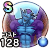

ドルマゲス
ドラクエ8イベントドラクエ8ReWALKこころ最大コスト+4スキルの斬撃・体技ダメージ+5%イオ属性斬撃・体技ダメージ+7%スキルHP回復効果+5%ドルマ属性耐性+7%踊り耐性+7% / 8.0点
くわしい特徴
【ランク特殊効果】 こころ最大コスト+4スキルの斬撃・体技ダメージ+10%イオ属性斬撃・体技ダメージ+10%スキルHP回復効果+10%ドルマ属性耐性+15%踊り耐性+10%呪い耐性-20%こころ最大コスト+4スキルの斬撃・体技ダメージ+5%イオ属性斬撃・体技ダメージ+7%スキルHP回復効果+5%ドルマ属性耐性+7%踊り耐性+7%